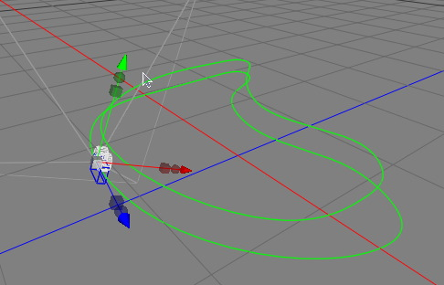

|
スプライントラッキングタグ
しばしば、オブジェクトをスプラインに沿わせたい場合があります。例えば、路に沿って車を走らせたアニメーションや、カメラが飛び回るアニメーションを作成したい場合。スプライントラッキングタグで、このタイプのアニメーションが大変簡単に作成できます。

スプラインオブジェクトパスにそって動くカメラオブジェクト
プロパティ
- パス: オブジェクトはこのスプラインに沿います。このパラメータをセットするには、オブジェクトブラウザからスプラインオブジェクトをドラッグ＆ドロップします。
- レール: このレールオブジェクトもスプラインでなければいけません。このプロパティがセットされている場合、オブジェクトの +Y 軸方向が常にレールスプラインを指すように回転します。
- 接線に合わせる: このプロパティが On になっている場合、オブジェクトの -Z 軸方向がスプラインの接線とそろうようになります。またレールスプラインも設定している場合、オブジェクトの傾き回転は、その +Y 軸方向がレールスプラインを指すように修正されます。
- すべてのセグメント: テキストスプラインのようなスプラインオブジェクトは、多くのパスセグメントから構成されています。すべてのパスセグメントに沿ってアニメーションさせるには、このプロパティを On にします。もし、このプロパティが Off になっている場合、オブジェクトはただ１つのパスセグメントに沿うでしょう。
- セグメント: オブジェクトが沿うパスセグメント（のナンバー）
- 位置: スプラインに沿うオブジェクトの位置。位置が 0 の場合、オブジェクトはスプラインの最初にあります。もし、位置が 1 の場合、オブジェクトはスプラインの最後に来ます。
|